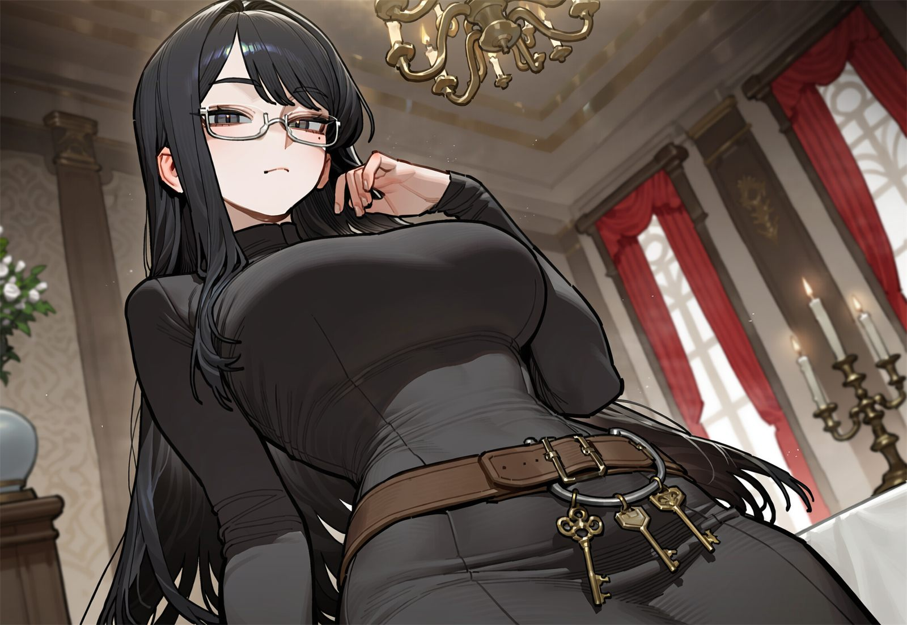
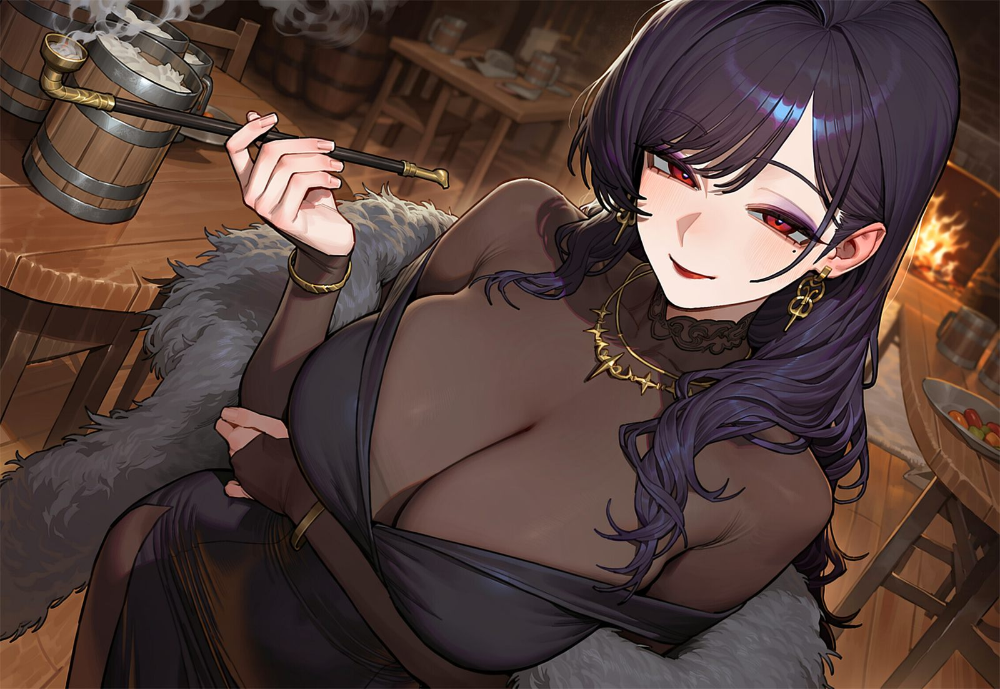
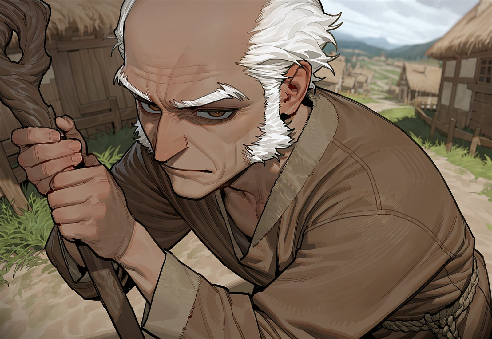
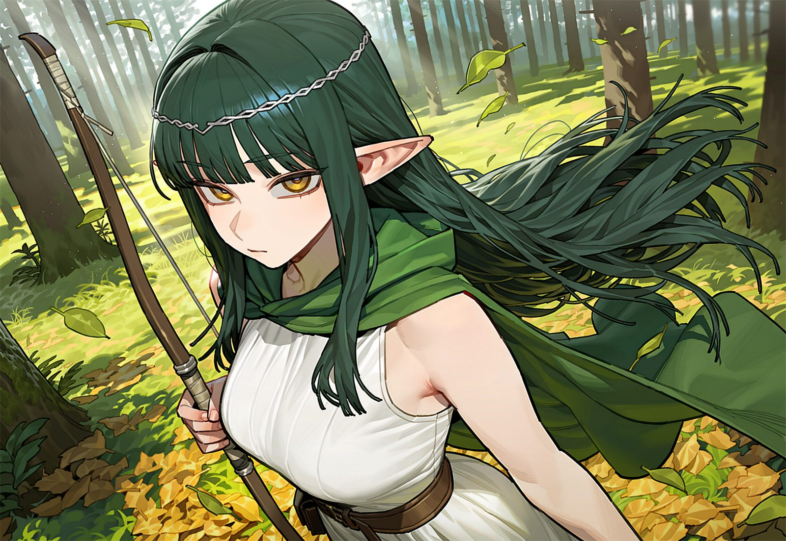
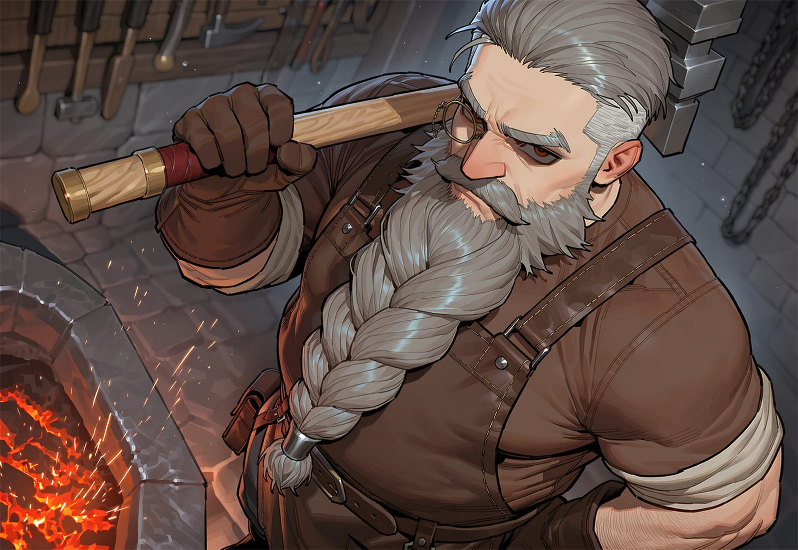
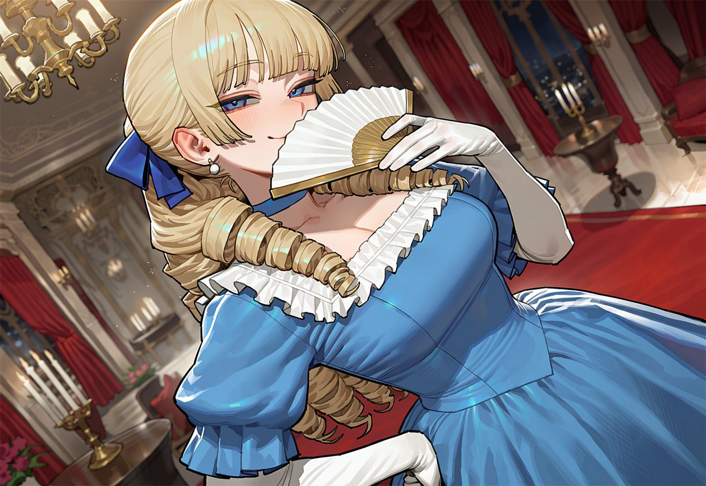
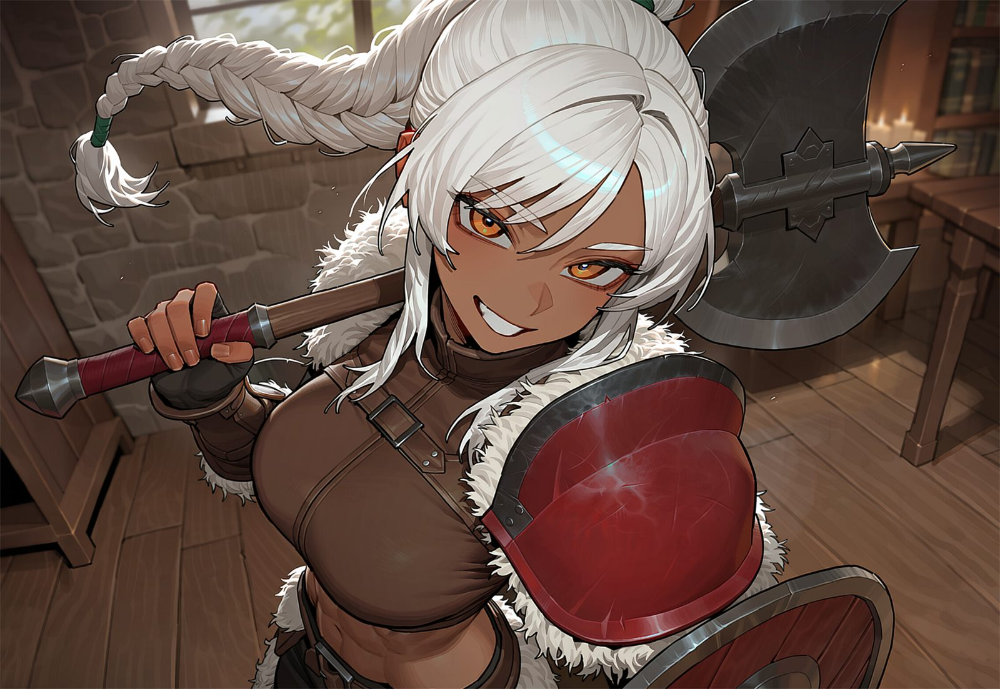
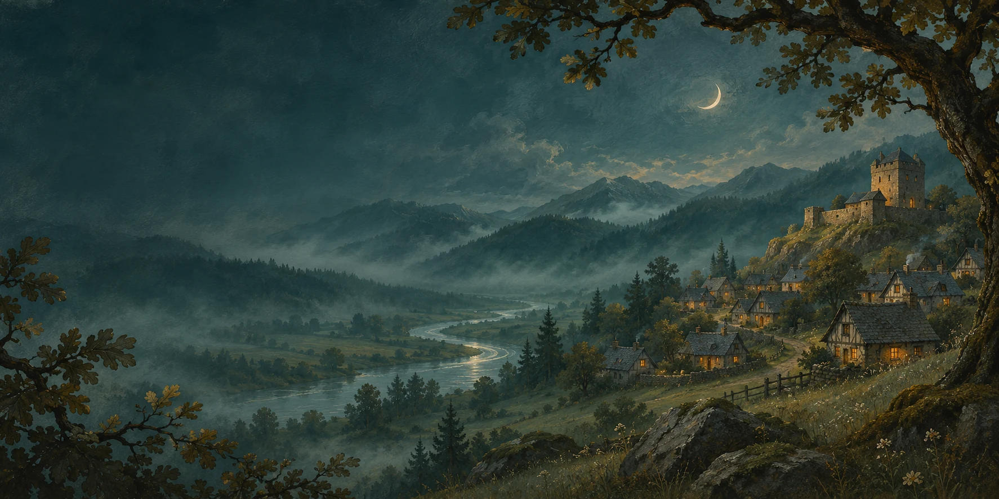

A NEW LORD. AN UNWRITTEN STORY.
변경의
신임 영주가
되었다.
왕국 동쪽 끝, 이름 없는 땅 하나.
그곳에서 당신의 이야기가 시작됩니다.
왕국의 끝에서,
당신의 역사가 시작된다.
A land to cultivate. A story to make your own.
왕국 동쪽 끝 에른 변경에 영지 하나가 주어집니다.
땅을 일구고 사람을 들이고 이웃과 값을 따지는 일이 이 작품의 본축이며, 로맨스는 그 곁에서 자랍니다.
가신과 이웃, 이종족 열두 사람은 영주가 없는 동안에도 각자의 목표를 따라 움직입니다.
에른 변경에 관하여 ↗변경 너머의 세계
숲의 경계에서 왕국의 질서까지.
손으로 일구는 영지
땅을 일구고, 장부를 펴고, 내일을 짓는 일.
 III
III당신 곁의 열두 사람
누구에게나, 당신과 다른 바람이 있습니다.
02 / A LAND OF YOUR OWN
작은 개척지에서,
하나의 도시로.
움집과 목책이 선 자리에서 시작합니다.
영지의 다음 모습을 직접 펼쳐 보십시오.
SETTLEMENT
개척지
인구 50까지
움집 · 목책
에른 영지의 기록 ← 인장을 움직여 보세요 →
03 / PEOPLE OF THE MARCH
같은 땅, 서로 다른 바람.
충성과 계약, 이해와 갈등. 영주가 없는 동안에도 이들의 삶은 계속됩니다.

01 / 12오딜 마르센
↗02 / 12카트린 볼크
↗아녜스
↗
04 / 12베아트릭스 코른
↗
05 / 12요스트
↗이네스 라우
↗
07 / 12시아렐
↗
08 / 12두르간
↗
09 / 12클로틸드 드 레이벡
↗마티아스 그렌
↗
11 / 12잉가
↗디트마르 크론
↗04 / THE WEIGHT OF A DECISION
모두를 위한 결정은
쉽지 않습니다.
기사, 성당, 길드, 그리고 촌락.
당신의 결정이 네 세력의 마음을 움직입니다.
ISSUE YOUR FIRST EDICT
큰 결정은 대개 한쪽을 올리고 다른 쪽을 깎습니다.
THE TURNING YEAR
땅은 계절을 기억합니다.
계절을 고르면 이곳의 공기도 달라집니다.
05 / BEGIN YOUR STORY
어떤 시작을 고르시겠습니까?
